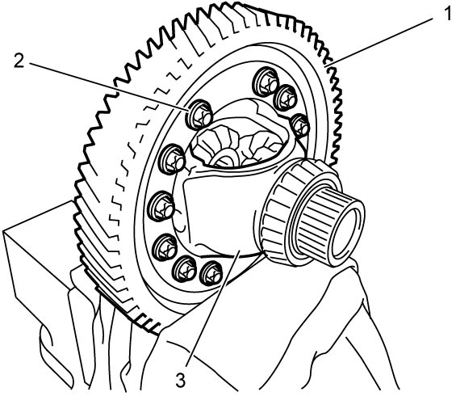
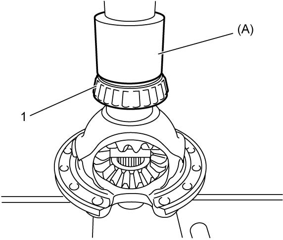
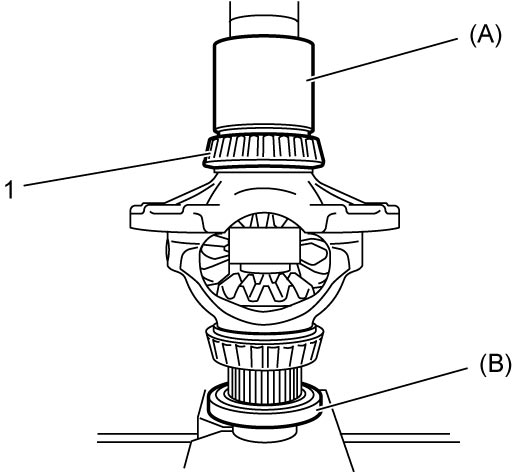
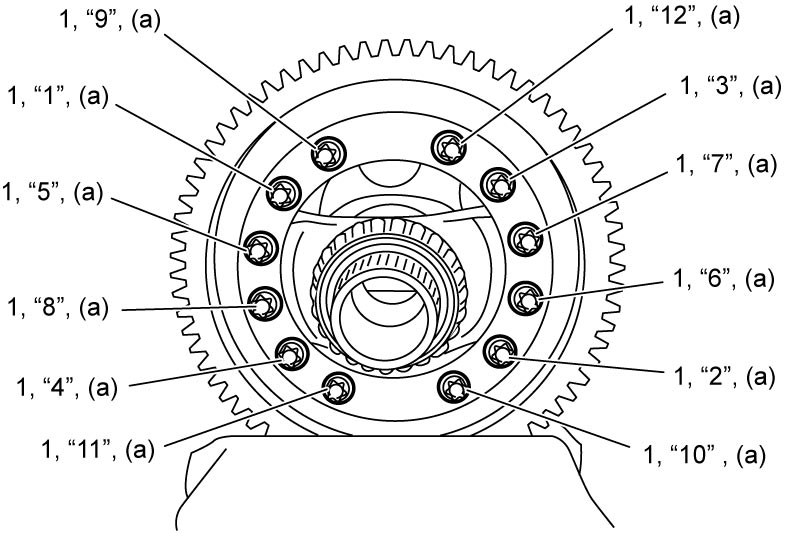

5F
| Differential Disassembly and Reassembly |
Disassembly
 "Expand image")

 "Expand image")
3)With final gear (1) fixed soft jawed vise, remove final gear bolts (2) and remove differential case (3).
NOTE:
When using vise, put clean cloth between final gear and vise so as not to cause damage to final gear.
4)Remove differential case from final gear by tapping it evenly using plastic hammer.


 "Expand image")
Reassembly
1)Press-fit right bearing (1) using special tool and hydraulic press.

 "Expand image")
2)Press-fit left bearing (1) using special tools and hydraulic press.

 "Expand image")
3)With final gear fixed in soft jawed vise, install differential case and final gear bolts (1) and then tighten final gear bolts as follows.
a)Tighten final gear bolts to 35 N·m (3.6 kgf-m, 26.0 lbf-ft) in numerical order (“1” – “12”) evenly and gradually.
b)In the same manner as in Step a), retighten them 50°.

 "Expand image")
4)After replacing transaxle inner parts, perform TCM and Clutch Initialization.